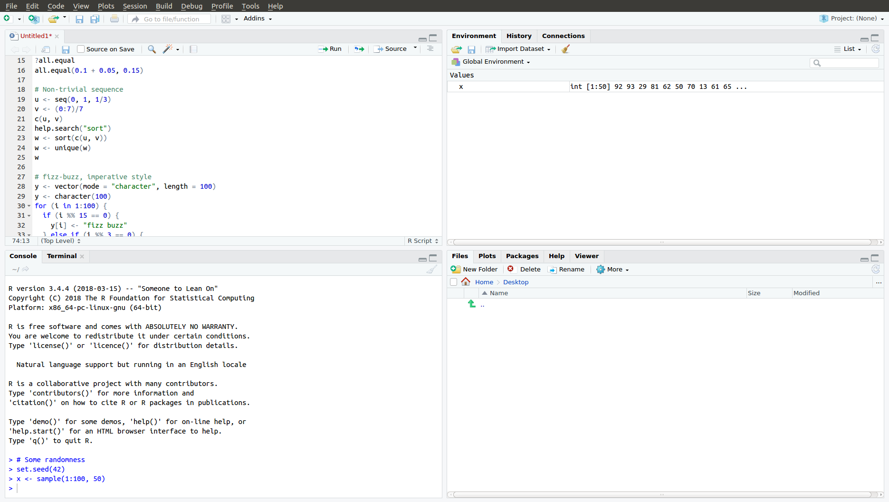

?help
help(help)Introduction and History
authors: Karl Brand, Elizabeth Ribble and S. Willemsen
Course Overview
In the first part of the course we are introduced to the R software package, or environment, and learn about R, how to interact with it and it’s basic programming elements. In the second part of the course we’ll learn how to use R for it’s intended function: doing statistics quickly and effectively.
We will cover essential topics including how to use R and why we use it; objects, classes and functions; and creating, importing, saving, manipulating, combining, sub-setting and plotting data.
By the end of the first couple of introductory days I expect that you can write your own code and have a reasonable understanding of what’s going on when you cut and paste other people’s code, which is typical of how people get started with R (or any other language for that matter).
Introduction
History
Before R there was the statistical analysis program, S, developed at Bell Laboratories in 1976 by John Chambers. S was later commercialised as S-PLUS. John Chambers is also a current member of the board of the R Foundation for Statistical Computing.
Ross Ihaka and Robert Gentleman of Dept of Statistics, University of Auckland, New Zealand begin coding (1991) the S clone, R, as an open source alternative for academic use. Together with the R core group’ they released version 1 under the GNU Public License (GPL) v2 and v3 in 2000. The name, R, probably derives from the first letter of the creator’s names. http://cran.r-project.org/doc/FAQ/R-FAQ.html#Why-is-R-named-R_003f
Get it
Install it
To get R on your PC first you need to install the core R application. Of course you’ll need to download the version for your operating system and architecture first.
For Linux: https://cran.r-project.org/bin/linux/
For Mac: https://cran.r-project.org/bin/macosx/
For Windows: https://cran.r-project.org/bin/windows/
Although R for Windows (and Mac?) ships with a basic text editor, and it’s possible to execute code from the terminal under linux, a fully featured editor increases convenience and productivity. Grab an awesome text editor:
RStudio: https://www.rstudio.com/products/rstudio/
Visual Studio Code: https://code.visualstudio.com/
Positron: https://github.com/posit-dev/positron
Emacs/ESS: http://ess.r-project.org/index.php?Section=download
Here’s a full list available editors: https://en.wikipedia.org/wiki/R_(programming_language)#Interfaces
What is R and how do we use it
Definition(s)
Wikipedia: `R is a programming language and free software environment for statistical computing and graphics supported by the R Foundation for Statistical Computing. The R language is widely used among statisticians and data miners for developing statistical software[7] and data analysis.’ http://en.wikipedia.org/wiki/R_(programming_language)
Comprehensive
RArchive Network (CRAN): `R is ``GNU S’‘, a freely available language and environment for statistical computing and graphics which provides a wide variety of statistical and graphical techniques: linear and nonlinear modelling, statistical tests, time series analysis, classification, clustering, etc.’ https://cloud.r-project.org/.The R Journal - Facets of R: `This paper considers six characteristics, which we will call facets. They characterize R as:
- an interface to computational procedures of many kinds;
- interactive, hands-on in real time;
- functional in its model of programming;
- object-oriented, “everything is an object”;
- modular, built from standardized pieces; and,
- collaborative, a world-wide, open-source effort.’
- My definition: A command based, object oriented and functional language; in contrast to excel which is a cell centric, spreadsheet managing graphical user interface (GUI).
Working with R
You type commands, also known as `expressions,'' into a text editor or terminal and send them toRfor evaluation.R` evaluates the command, prints the command (by default), then the result of the evaluated command, if any.
The simplest expressions equal simple calculations, similar to those we could do on a hand calculator
>1 + 1
[1] 2
>1 - 1
[1] 0
>2 * 3
[1] 6
>2 / 3
[1] 0.6666667Here we use ‘>’ to denote the R prompt. It is used in the console to indicate that R is ready for a new command. The lines in between is the output given by R.
But we can also ‘call’ functions on an object. Most of the functionality in R comes from these functions. There are many functions we can use including the standard mathematical ones:
>cos(3.1415)
[1] -1
>exp(0)
[1] 1
>log(1)
[1] 0The results above are displayed but not stored. To do this we must give a name to the result. That is, we store the result in a variable. The results are now no longer displayed but using the variable name we can refer to it later.
Assigning a result in a variable is done using <-. For example:
>five <- 3+2
> five
[1] 5
> five + 1
[1] 6How we interact with R
Not surprisingly everything about R is built on the principle of KISS, i.e., keep it simple stupid. * We get things done in R by typing commands and asking R to execute them with the ENTERENTER key. Assuming you know the commands, it couldn’t be any simpler. * The front end of R, the part that receives your terminal. You can type your commands directly into the terminal and hit {} to do your work. But if you need thousands of commands for a specific task, or want to share your method, this approach gets tiring fast. * Since the commands are just text, it’s easy to write a series of commands using any program built for working with text, i.e., text editors and word processors, to create code or a script, to get something done. * The easiest, most efficient way to write R code is using a text editor or integrated development environment, like RStudio or Emacs/ESS as mentioned earlier.
RStudio: the easiest way to work with R
For most users, especially those new to R, RStudio is probably the best IDE to use. Like everything about R, you’re free to choose whatever editor you like. For Windows platforms, you could just use the basic editor that’s bundled with the downloadable installer. Let’s have a look at an RStudio ‘session’.

There are four panes:
- The top left is the source pane. Do your typing in this pane.
- The bottom left is your console. This is a window looking into what
Ris actually doing. Even though it’s fine to type your commands in this pane at theR '>'prompt, avoid this: your commands are less conveniently stored and rerun than your source code in the editor pane. - Top right: environment pane
- Bottom left: files pane
Type your commands in the source pane and send them to R using the keyboard short-cut . This will send the line of code your cursor is on to R if no code is selected; or if there is code selected, then only the selected code is sent. Open RStudio on your PC and try it now. (Alternatively you can also pres the ‘Run’ icon just below the file tabs). Since programming is all about typing commands using a keyboard, not pointing and clicking, you might appreciate lots of keyboard shortcuts. Here’s an awesome cheatsheet of (RStudio keyboard shortcuts)[https://www.rstudio.com/resources/cheatsheets/].
A few other things about RStudio:
- move the focus between panes using the key board shortcuts Ctrl+1Ctrl+1 and Ctrl+2Ctrl+2 for the source and console panes respectively
- the little asterisk next your source code file name indicates unsaved code
- save your source code!
Backslashes
One more thing I want to mention is how R interprets backslashes and forwardslashes, i.e. \ and / respectively, as relates to defining the locations of files on your PC. James McDonald does a better job of clarifying this than I otherwise would http://cran.r-project.org/doc/contrib/Lemon-kickstart/kr_scrpt.html:
Let’s pause to note a little historical bifurcation that has caused Almost as much strife as the question of exactly what the DELETEDELETE key should do. The convention that the slash (/) character is used as a separator in the notation for a filesystem path is not universal. PC-DOS, for example, used the backslash \. Like Fords vs Chevrolets, French vs English, and whether you crack the egg at the big or small end, it doesn’t really matter a rat’s behind which one you use as long as it works. To make it work in R, however, where the *NIX convention of using the backslash as an escape character is respected, you will have to double backslashes in paths for them to be read properly. Thus if the filename above was: ‘1.R’ I would have to refer to it as: ‘c:\JIM\PSYCH\ADOLDRUG\PARTYUSE1.R’ in an R script.
Getting Help
- Online help. The first place to look. Also works when you’re actually offline:
??help
apropos("help") # quotes are neededIt’s fun, try them out!
Google. And when you’re actually online, often the first place and **last** place you’ll go when you have no idea is (Google)[href{https://www.google.com].
Package Vignette’s. Where the online help is devoid of the context often needed to grasp the full potential and logical use of functions, vignette’s is the best place to find such information, with extended examples, and often more. For example, see the limma http://www.bioconductor.org/packages/release/bioc/vignettes/limma/inst/doc/usersguide.pdf
Mailing Lists. R-help http://www.r-project.org/mail.html. Do check first using Google or the R-help searchable archives http://tolstoy.newcastle.edu.au/~rking/R/ first if your question has already been asked and has the answer to solve your issue.
Other lists: https://stat.ethz.ch/mailman/listinfo
Stack Overflow https://stackoverflow.com. Probably more questions and answers posted here than on the mailing list.
Trouble shooting
- Clean your environment and start again to be sure your messy environment isn’t the cause of your issue. In RStudio, click the broom in the Environment tab; in any R session you can also run:
rm(list=ls())
ls() # quotes are needed- Start
Rwithout any customisations, i.e., omit loading the.Rprofileand.Renvironcustomisation files. From the command line:
R --vanillatrace.back()function: very helpful pinpointing the source of an error, and thus its cause.
Further resources
Rfocused search engine: http://www.Rseek.orgAggregator of all R blogs: http://www.r-bloggers.com
Quick-R: https://www.datacamp.com/doc/r/category/r-documentation
RCourse in one hour: https://www.youtube.com/watch?v=eR-XRSKsuR4The list of reference texts: http://www.r-project.org/doc/bib/R-publications.html
The Big Book of R: https://www.bigbookofr.com/
This course not enough? There’s a excellent free online introduction to R here: https://www.computerworld.com/article/2497143/business-intelligence-beginner-s-guide-to-r-introduction.html
And more..
- http://www.ats.ucla.edu/stat/r/
- http://zoonek2.free.fr/UNIX/48_R/02.html
A First Course in Statistical Programming with R. W. John Braun and Duncan J. Murdoch. Cambridge University Press, 2007\ I love this book, beautifully explores the programming aspects of
R.